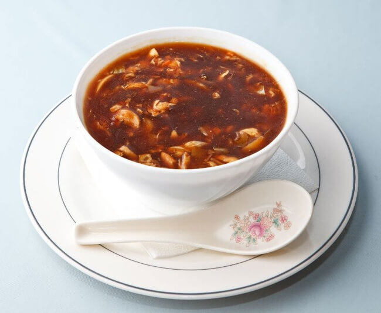

| Vegetarian |
| Soup Of The Day |
INR 120 |
|
Vegetable soup is a garden medley blend of carrots, onions, tomatoes, celery root, leeks, potatoes, cabbage, pleas, broccoli and garlic. |
| |
|
|
|
| Paneer Makhani |
INR 250 |
|
Creamy dish of paneer, in which the gravy is prepared with butter, tomatoes, cashews or cream, spices, red chili powder and garam masala. |
| Plain/ Schezwan Noodles |
INR 200 |
 |
Traditional noodles mixed with veggies and spices, prepared in schezwan sauce. |
| Veg Club Sandwich |
INR 150 |
|
Made with veggies like cabbage, capsicum, bell peppers, onions, zucchini, tomatoes and cucumber, in a mixture of mayo and tartar sauces. |
| Jeera/ Steamed/ Fried Rice |
INR 200 |
|
Traditional cooked basmati rice. |
| Red/ Pink/ White Pasta |
INR 200 |
|
Masala macarroni pasta, mixture of red and white pasta and alfredo pasta. |
| Tandoori Roti/ Naan/ Paratha |
INR 100 |
|
Flatbread made in tandoor. |
| Non-Vegetarian |
| Soup Of The Day |
INR 120 |
 |
Garden medley blend of spices, onions, garlic, along with your choice of chicken/ meat/ prawns. |
| Chicken Makhani |
INR 250 |
|
Made of chicken in a mildly spiced tomato sauce, corrianders, cashews or cream, spices, red chili powder and garam masala. |
| Chicken Schezwan Noodles |
INR 200 |
|
Traditional noodles mixed with veggies and spices, boiled chicken, prepared in schezwan sauce. |
| Chicken Tandoori |
INR 150 |
 |
Tandoori chicken is chicken dish prepared by roasting chicken marinated in yoghurt and spices in a tandoor. |
| Chicken Chilly/Tikka Wrap |
INR 150 |
|
Wrapped in roti, layered in egg omelette is a batter of chicken, ginger and garlic paste, lemon juice. |
| Alfredo Pasta |
INR 200 |
|
Traditional white sauce pasta mixed with boiled chicken. |
| Chicken Hyderabadi Biryani |
INR 250 |
|
Rice made with Indian spices, vegetables, meat/ chicken, egg, yoghurt, dried fruits mixed with hyderabadi masala. |